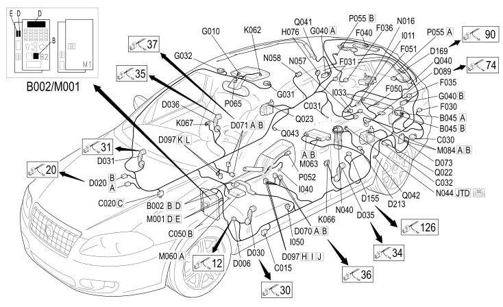

25 REAR
- Path
- Electrical equipment > 2 WIRING > 25 REAR
- Kind
- wiring harness
- Applies to
- all engines; all production periods
- Interactive page
- https://sloeber94.github.io/elrnDB-fCrm/en/#/194001807
Applies to: all engines; all production periods

Topics that link to this page (99)
- B002B JUNCTION UNIT UNDER DASHBOARD (REAR)
- B002D JUNCTION UNIT UNDER DASHBOARD (REAR)
- B045A LUGGAGE COMPARTMENT JUNCTION UNIT (CVB) (REAR)
- B045B LUGGAGE COMPARTMENT JUNCTION UNIT (CVB) (REAR)
- C015 DRIVER'S DASHBOARD EARTH (REAR)
- C020C PASSENGER SIDE DASHBOARD EARTH (REAR)
- C030 LEFT REAR EARTH (REAR)
- C031 RIGHT REAR EARTH (REAR)
- C032 REARSCREEN EARTH (REAR)
- C050B AIR BAG SYSTEM EARTH (REAR)
- D006 FRONT/REAR COUPLING (REAR)
- D006 FRONT/REAR COUPLING (REAR)
- D020A DASHBOARD/REAR COUPLING (REAR)
- D020B DASHBOARD/REAR COUPLING (REAR)
- D030 DRIVER'S FRONT DOOR COUPLING (REAR)
- D030 DRIVER'S FRONT DOOR COUPLING (REAR)
- D030 DRIVER'S FRONT DOOR COUPLING (REAR)
- D030 DRIVER'S FRONT DOOR COUPLING (REAR)
- D030 DRIVER'S FRONT DOOR COUPLING (REAR)
- D030 DRIVER'S FRONT DOOR COUPLING (REAR)
- D031 PASSENGER FRONT DOOR COUPLING (REAR)
- D031 PASSENGER FRONT DOOR COUPLING (REAR)
- D031 PASSENGER FRONT DOOR COUPLING (REAR)
- D031 PASSENGER FRONT DOOR COUPLING (REAR)
- D031 PASSENGER FRONT DOOR COUPLING (REAR)
- D031 PASSENGER FRONT DOOR COUPLING (REAR)
- D035 LEFT REAR DOOR COUPLING (REAR)
- D035 LEFT REAR DOOR COUPLING (REAR)
- D035 LEFT REAR DOOR COUPLING (REAR)
- D036 RIGHT REAR DOOR COUPLING (REAR)
- D036 RIGHT REAR DOOR COUPLING (REAR)
- D036 RIGHT REAR DOOR COUPLING (REAR)
- D045 SUN ROOF COUPLING (REAR)
- D068B HI-FI SYSTEM COUPLING (REAR)
- D068C HI-FI SYSTEM COUPLING (REAR)
- D070A DRIVER'S SEAT COUPLING (REAR)
- D070B DRIVER'S SEAT COUPLING (REAR)
- D071A PASSENGER SEAT COUPLING (REAR)
- D071B PASSENGER SEAT COUPLING (REAR)
- D073 TRAILER PREPARATION COUPLING (REAR)
- D089 PARKING SENSOR COUPLING (REAR)
- D097H SHORT CIRCUIT COUPLING (REAR)
- D097I SHORT CIRCUIT COUPLING (REAR)
- D097J SHORT CIRCUIT COUPLING (REAR)
- D097J SHORT CIRCUIT COUPLING (REAR)
- D097K SHORT CIRCUIT COUPLING (REAR)
- D097L SHORT CIRCUIT COUPLING (REAR)
- D155 FRONT/REAR SERVICE CABLES COUPLING (REAR)
- D155 FRONT/REAR SERVICE CABLES COUPLING (REAR)
- D169 REAR COUPLING / REAR COURTESY LIGHT BRAID (REAR)
- D213 FUEL TANK COUPLING (REAR)
- D213 FUEL TANK COUPLING (REAR)
- F030 LEFT REAR LIGHT CLUSTER (REAR)
- F031 RIGHT REAR LIGHT CLUSTER (REAR)
- F035 LEFT REAR LIGHT CLUSTER (MOVING SECTION ON BOOT LID) (REAR)
- F036 RIGHT REAR LIGHT CLUSTER (MOVING SECTION ON BOOT LID) (REAR)
- F040 ADDITIONAL REAR LIGHT (THIRD BRAKE LIGHT) (REAR)
- F050 LEFT NUMBER PLATE LIGHT (REAR)
- F051 RIGHT NUMBER PLATE LIGHT (REAR)
- G010 FRONT COURTESY LIGHT (REAR)
- G031 DRIVER'S SUN VISOR LIGHT (REAR)
- G032 PASSENGER SUN VISOR LIGHT (REAR)
- G040A LUGGAGE COMPARTMENT COURTESY LIGHT (REAR)
- G040B LUGGAGE COMPARTMENT COURTESY LIGHT (REAR)
- H060 SUN ROOF SWITCH (REAR)
- H073 SUN ROOF BLIND CONTROLS (REAR)
- H076 REAR AIR BAG DEACTIVATION (REAR)
- I011 BOOT RELEASE SWITCH (REAR)
- I033 SWITCH ON BOOT EXTERIOR HANDLE (REAR)
- I040 PARKING BRAKE ENGAGED SWITCH (REAR)
- I050 INERTIA SWITCH (REAR)
- I050 INERTIA SWITCH (REAR)
- I050 INERTIA SWITCH (REAR)
- K062 VOLUMETRIC SENSORS FOR ALARM (REAR)
- K066 SENSOR FOR DRIVER'S SIDE BAG (REAR)
- K067 SENSOR FOR PASSENGER SIDE BAG (REAR)
- M001D BODY COMPUTER (REAR)
- M001E BODY COMPUTER (REAR)
- M060A AIR BAG CONTROL UNIT (REAR)
- M063A LUGGAGE COMPARTMENT CONTROL UNIT (NVB) (REAR)
- M063B LUGGAGE COMPARTMENT CONTROL UNIT (NVB) (REAR)
- M084A PARKING SENSOR CONTROL UNIT (REAR)
- M084B PARKING SENSOR CONTROL UNIT (REAR)
- N016 REARSCREEN WIPER MOTOR (REAR)
- N040 FUEL PUMP AND LEVEL GAUGE (REAR)
- N044 ADDITIONAL HEATER ELECTRIC PUMP (REAR)
- N057 BOOT LOCK GEARED MOTOR (REAR)
- N058 FUEL FILLER FLAP LOCK GEARED MOTOR (REAR)
- P026 HANDSFREE MICROPHONE (REAR)
- P052 REAR CURRENT SOCKET (REAR)
- P055A HEATED REAR WINDSCREEN (REAR)
- P055B HEATED REAR WINDSCREEN (REAR)
- P065 ELECTRO-CHROMIC INTERIOR REAR VIEW MIRROR (REAR)
- Q022 DRIVER'S SIDE REAR SEAT BELT PRETENSIONER (REAR)
- Q023 PASSENGER SIDE REAR SEAT BELT PRETENSIONER (REAR)
- Q040 DRIVER'S HEAD BAG (REAR)
- Q041 PASSENGER HEAD BAG (REAR)
- Q042 LEFT REAR AIR BAG (REAR)
- Q043 RIGHT REAR AIR BAG (REAR)